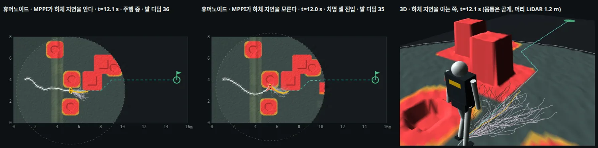

TRAVPLAN · 챕터 발표 · 휴머노이드·4족 보행 내비게이션
위 층은 무엇을 넘기고,
아래 층은 그것을 해낼 수 있는가
2025–2026 휴머노이드·4족 보행 연구를 내비, 지형 인식, 전신 제어, 장시간 자율의 네 층으로 읽고 travplan의 Planner→Controller 경계에 대 본다
B.16
B.16.8
B.18
A.7–A.8
§I
TP-0162
왜 다리 로봇인가
바퀴 배달로봇에도 같은 두 질문이 있다
위 층은 아래 층에 무엇을 넘기나
속도와 yaw rate, 진행 방향, waypoint, 기준 동작 가운데 무엇을 넘기느냐가 연구마다 다르다.
travplan의 Planner D는 4 s, 40걸음의 시간 인덱스 궤적을 넘긴다. 경계가 가장 위에 있는 편이다.
아래 층은 그것을 해낼 수 있나
학습 정책의 출력은 그대로 실행하면 동역학, 접촉, 학습 분포 가운데 하나를 어긴다. 최근 연구는 실행 전에 맞는 집합으로 투영한다.
travplan의 남은 정면 보행자 충돌은 스워브 모듈의 조향 한계(56.2°) 때문이다(TP-0162).
travplan: 보도의 턱·경사·보행자는 다리 로봇의 계단·틈·사람과 같은 문제다. 다른 점은 아래 층이 보행 정책이 아니라 스워브 plant라는 것이다.
순서
지형도에서 시작해 네 층을 지나 travplan으로 돌아온다
| 장 | 갈래 | 핵심 | 문서 절 |
|---|---|---|---|
| 1 | 지형도 | 분야별 대세, 연구실 계보 | B.18, B.16 |
| 2 | 내비 층이 넘기는 것 | CMU 스택, LP-NavOA, FocusNav, TAME-Nav | B.16.8, B.4 |
| 3 | 지형을 보는 보행 | Watch Your Step, 성긴 LiDAR 지도, PHP, LocoFormer | B.16.3, A.8.2, B.16.5–6 |
| 4 | 전신 제어와 원격조종 | PASSAGE, NEXUS, 출력의 투영 | B.16.6, §I, B.16.8 |
| 5 | 장시간 자율 작업 | Flexion Reflect v1.0, Dyna | B.16.3, A.8.1 |
| 6 | 비교 | 두 비교표, 공통점과 차이점 | 위 절 전부 |
| 7 | travplan에서 | 경계의 대응, 가져올 순서, 다음 시험 | B.16.7, B.16.8 |
1 · 지형도 · B.18, B.16
다리 로봇의 저수준은 RL이 대세이고,
위 층은 아직 갈린다
궤적 최적화는 스택의 중심에서 물러나 보상, 참조, 교사 데이터를 만드는 자리로 갔다.
B.18.1 · 분야 × 방식
사족과 휴머노이드는 RL이 대세, 모바일 로봇은 고전 계획이 대세다
| 방식 | 모바일 로봇(travplan) | 사족보행 | 휴머노이드 |
|---|---|---|---|
| 모델 기반 제어 | 대세 RPP·DWB 추종 | 축소 Spot은 MPC + RL | 정착 Atlas는 MPC 위 LBM |
| 탐색·샘플링 계획 | 대세 NavFn·Smac 전역 | 정착 전역 내비, 발 디딤 | 축소 고전 발자국 계획 |
| 샘플링 MPC | 정착 Nav2 기본값 | 소수 DIAL-MPC | 부상 학계 한정 |
| RL sim-to-real | 부상 소셜·오프로드 | 대세 ANYbotics·BD·Unitree | 대세 Figure·Agility·Unitree·BD |
| 모방·모션 트래킹 | 부상 BARN 2024 우승 | 소수 | 대세 모캡 기반 전신 제어 |
| 종단간 학습 플래너 | 부상 NoMaD·NavDP | 부상 계층형 RL 내비 | 부상 학습형 내비 |
| 파운데이션 모델·VLA | 부상 NaVILA·OmniVLA | 부상 상위 내비·점검 | 부상 Helix 02·GR00T·LBM |
travplan: 학습 Planner D는 '종단간 학습 플래너'(부상), MPPI는 '샘플링 MPC'(정착) 칸이다. 다리 로봇에서 대세인 RL은 travplan에서는 Planner D 후학습(TP-0066)에만 쓴다.
B.16 · 연구실 계보
휴머노이드 연구는 몇 연구실의 도구와 사람으로 이어진다

travplan: Flexion을 세운 Rudin·Hoeller는 legged_gym과 Isaac Lab을 만든 사람들이다. travplan이 학습 루프를 옮길 후보(Isaac Lab, TP-0042)와 같은 계보다.
2 · 내비 층이 넘기는 것 · B.16.8, B.4
경계를 어디에 두느냐가
연구마다 다르다
CMU 스택은 속도를, LP-NavOA는 방향을, FocusNav는 waypoint를 넘기고, GLAD는 경계를 없앴다.
B.16.8 · 첫째·둘째 갈래
경계를 내릴수록 위 층이 정하는 것이 줄어든다
| 경계 | 연구 | 위 층이 넘기는 것 | 아래 층 |
|---|---|---|---|
| 가장 위 | travplan | 시간 인덱스 궤적(4 s, 40걸음) | MPPI·NMPC Controller와 스워브 plant |
| 위 | CMU 자율 스택 | 차체 속도와 yaw rate | 로봇 자체 보행 제어(Go2), G1 보행 정책 |
| 중간 | LP-NavOA | 진행 방향 하나 | 얼린 보행 정책과 안전 필터 |
| 아래 | FocusNav | 정책 안에서 예측한 waypoint | 같은 정책(waypoint 둘레 BEV만 본다) |
| 없음 | GLAD, End-to-End | 전진 명령 하나, 또는 점군에서 바로 관절 | 정책 하나 |
travplan: LP-NavOA의 "아래 층은 얼리고 위 층은 명령의 일부만 덮어쓴다"는 Guidance 폴백(TP-0078)의 반대 방향이다. 폴백은 Planner 전체를 바꿔 끼운다.
B.16.8 · CMU 자율 스택
몸체가 달라도 아래 층에 넘기는 것은 속도와 yaw rate뿐이다
메카넘 바퀴, Go2, 바퀴 다리 Diablo
SLAM, 경로 계획(FAR), 탐사(TARE), 기본 자율(지형 분석, 충돌 회피, waypoint 추종)의 같은 층을 세 몸체에 쓴다.
설정값만 바꾼다
장애물 높이 문턱 기본 0.05 m(실내 0.015–0.02, 실외 0.1–0.15 m), 로봇 치수, 바퀴 종류다. 걸음새 제어는 스택에 없다.

travplan: 이 스택은 아래 층이 명령을 얼마나 따르는지 묻지 않는다. travplan에서 같은 문제가 plant 지연이었고, rollout에 지연을 넣은 mppi_plant_lag가 치명을 55에서 4로 줄였다(TP-0150).
B.16.8 · LP-NavOA, FocusNav
경계를 보행 정책 쪽으로 내리면 무엇을 얻나
얼린 보행 정책 위의 순환 Planner
원형 명령으로 배운 보행은 3.0 m/s까지 따랐다(고정 순서 명령 1.44 m/s). 광선 8 × 8과 목표 방향만 보고 지도는 없다.
MuJoCo 벽·실내 장면의 제시간 도달이 38.3·40.3 %에서 85.1·88.0 %로 올랐다.
waypoint를 예측하고 그 둘레만 본다
자세가 불안정하면 게이트가 먼 waypoint를 끊고 발 앞만 본다. 성공률 87.02 %로 Gallant(50.32 %)보다 높다.

travplan: LP-NavOA의 G1 실물은 반복 시험이 아니라 실행 가능성 확인이다. 수치는 시뮬레이션 것이고, 경계를 내린 값의 근거로는 아직 약하다.
[1] LP-NavOA — arXiv:2606.23249 · [2] FocusNav — arXiv:2601.12790 · [3] GLAD — arXiv:2606.00637
B.4 · TAME-Nav · 사족
2D LiDAR와 목표만 보는 RL 정책 하나가 회피, 통로, 함정 탈출을 다 한다
특권 교사를 Soft-MoE 학생으로 증류
교사는 깨끗한 이력과 동적 장애물 궤적을 본다. 학생은 지연·잡음을 넣은 LiDAR 41빔 10프레임을 1D CNN, GRU, 전문가 8개 Soft-MoE로 받는다.
둘은 Actor를 공유하고, 미분 가능한 LiDAR CBF가 몸체 속도를 고친다.
처음 보는 지도 600개에서 78.2 %
같은 지도로 다시 학습한 SEA-Nav는 52.6 %다. Go2 실물은 함정 탈출과 좁은 통로를 10회씩 모두 성공했고, 접촉은 20회 중 한 번이었다.

travplan: 학습은 관절 동역학 없이 명령→응답 모델로 움직이는 GPU 2D 시뮬에서 한다. travplan의 운동학 시뮬과 같은 추상화이고, 실물에서는 따로 학습한 보행 제어기가 같은 속도 명령을 따른다.
[1] TAME-Nav — arXiv:2610.12877 (2026-10, SJTU·EIT·PolyU·USTC), 코드 공개 예정
3 · 지형을 보는 보행 · B.16.3, A.8.2, B.16.5–6
어디를 보느냐가
얼마나 보느냐보다 중요하다
Watch Your Step은 높이 693칸을 102개 값으로 줄이고도 더 잘 걸었다.
B.16.3 · Watch Your Step
지도를 보지 않는 작은 망이 다음 발 디딤 둘을 예측하고, 정책은 그 두 곳만 본다
고유감각 70차원 → 다음 발 디딤 둘
은닉층 둘(128, 128)의 MLP다. 높이 지도도, 자기 직전 출력도 보지 않는다.
두 곳의 7 × 7 조각만 본다
조각 하나는 0.35 m 정사각이다(G1 발 길이 0.208 m). 전체 지도 33 × 21칸(693)이 102개 값으로 준다. 전체 지도는 학습 때 critic만 본다.
500 iteration마다 FPM을 처음부터
현재 정책을 굴려 전이 50만 개를 모으고, 실제 착지 위치를 라벨로 다시 맞춘다.

[1] Watch Your Step — Heyrman·C. Li·Dadiotis·Hutter, ETH RSL·ETH AI Center, arXiv:2610.29612, 코드 MIT
B.16.3 · Watch Your Step 결과
빨리 배우고, 디딜 곳이 드문 지형에서 강하다
| 지표 | Watch Your Step | AME2(주의 인코더) | HM(전체 지도 MLP) |
|---|---|---|---|
| 커리큘럼 레벨 5 도달 | 7.5k iteration | 20.0k | 26.1k |
| 드문 디딤 지형(징검돌 등) 성공 | 74.2 % | 71.7 % | 42.7 % |
학습에 없던 0.55 m 틈과 0.6 m 낙차를 넘었고, 야외 18단 계단을 올랐다. 틈 앞에서는 보상하지 않은 감속과 몸 낮추기가 나타났다.
같은 수 이상의 높이를 발 둘레(원형 스캔)나 명령 방향 앞(Naive, 200칸)에서 뽑은 기준선은 전체 지도보다도 나빴다. Naive는 거의 모든 열에서 꼴찌였다.
travplan: 학습 Controller TinyPolicy(TP-0128)의 지형 관측은 Naive와 같은 모양이다(앞 0–2.4 m, ±0.6 m 고정 7 × 5 격자). 경로 앞 네 점 둘레의 조각을 읽는 변형은 관측 크기를 늘리지 않고 시험할 수 있다.
A.8.2 · 성긴 LiDAR 높이 지도
머리에 단 LiDAR 한 대로 계단과 실외를 걷는다
| 연구 | 로봇·센서 | 지도 | 정책 | 결과 |
|---|---|---|---|---|
| 전방향 계단 보행 | G1 + 머리 Mid-360 | 신뢰도가 시간·거리로 주는 누적 점군 지도, U-Net(EGAU)으로 정제 | 단일 단계 RL, 조밀한 "위험 디딤" 벌점 | 시뮬 안전 디딤 거의 100 %, 실외 장거리 보행 |
| PolygMap | LiDAR + RGB-D + IMU, Orin | 계단 평면을 다각형 의미 지도로 | 다각형 위 발 디딤 계획, 전신 계획 20–30 Hz | 실내외 계단 |
| 지각 보행 + world model | 높이 지도 | 변분 정보 병목 world model이 센서 잡음을 거른다 | 교사–학생 행동 모방 | 도시·오프로드 2 km 무개입 |
travplan: L1(합성 LiDAR + elevation_mapping_cupy, TP-0053)도 성긴 점에서 높이 지도를 만든다. 못 본 칸을 어떻게 채우느냐(그림자 상한·깊이 prior, TP-0044·0047)가 같은 질문이다.
B.16.6 · Perceptive Humanoid Parkour
깊이 영상을 보는 G1 정책 하나가 2D 속도 명령만 받아 1.25 m 벽을 오른다
motion matching → 기술 교사 → 깊이 학생
사람 파쿠르 동작을 G1에 옮기고 motion matching으로 "보행, 기술, 보행"을 잇는다. 기술마다 높이 스캔을 보는 교사를 배우고, 깊이 영상만 보는 학생 하나로 DAgger + PPO 증류한다.
벽 1.25 m(키의 96 %)를 3.63 s에
0.4 m 장애물을 0.8 s 안에 넘었고(최고 3.41 m/s), 48–60 s 동안 장애물 여럿을 이어 넘었다. 사람이 장애물을 약 0.5 m 옮겨도 접근을 고쳤다.

travplan: 옮길 것은 증류 손실의 일정이다. DAgger 가중을 앞 절반에 1에서 0.1로 내리고 끝까지 남긴다. 빼면 떨리는 행동이 생겼다.
[1] PHP — Wu 외, Amazon FAR·UC Berkeley·CMU·Stanford, RSS 2026, arXiv:2602.15827, 코드 Apache-2.0
B.16.5 · LocoFormer (Skild AI)
무작위로 만든 로봇 10만 대에서 배운 transformer 하나가 처음 보는 몸을 몇 초 안에 몬다

과제 공간과 맥락을 넓힌다
이족·사족과 그 바퀴형을 절차 생성하고 관성·이득·관절 한계를 크게 무작위화한다. 맥락을 수십 초로 늘리고 시도 사이에 기억을 넘긴다(메타 RL).
처음 보는 10종에서 0.96
로봇마다 따로 배운 전문가는 0.99다. 실물 G1·H1·Go2·Go2-W에서 무릎 고정, 바퀴 잠금, 종아리 절단에도 몇 초에서 수십 초 안에 다시 걸었다.
travplan: RMA가 0.5 s 이력으로 환경을 추정했다면 LocoFormer는 맥락으로 몸 자체를 추정한다. 실물 스워브 파라미터(TP-0035)를 모르는 지금, plant를 이력으로 추정하는 길의 상한을 보여 준다.
[1] LocoFormer — Min Liu·Deepak Pathak·Ananye Agarwal, Skild AI, CoRL 2025 최우수 논문 최종 후보, arXiv:2509.23745, 코드 비공개
B.16.5 · LocoFormer의 계보와 후속
처음 보는 몸을 설명으로 줄 것인가, 이력에서 읽을 것인가
| 갈래 | 연구 | 핵심 수치(조건) | LocoFormer와 |
|---|---|---|---|
| 이력에서 읽는다 | GenLoco(CoRL 2022) | 이력 15스텝 + 형태 무작위화, 실물 Mini Cheetah 정규화 보상 0.743 | 가장 가까운 앞선 연구 |
| AdA(DeepMind 2023) | Transformer-XL + 여러 시도, 0.8 넘는 과제가 영점 40 %에서 13번 뒤 72 % | TXL과 시도 구조의 원형 | |
| AnyCar(ICRA 2025) | 이력 transformer 순동역학 + MPPI, 처음 보는 고속 주행 추종 오차 0.57(전문가 1.26) | 바퀴판, 정책 대신 모델에 답한다 | |
| 몸 설명을 준다 | URMA, Embodiment Scaling Laws | 관절 설명 attention, 1,012대 전문가 증류(GPU 160장 약 5일) | 반대쪽 답 |
| COMPASS(2025) | (v, ω) 위의 Carter·H1·G1·Spot 정책 하나, G1 종합 성공 10.0 %에서 90.6 % | twist 층의 같은 질문 | |
| 후속(인용 36편) | Rapid Embodiment Adaptation(2026) | 짧은 이력의 명시 식별, 실물 관절 잠금 성공 80 %(무적응 20 %) | LocoFormer식 기준선을 이겼다 |
| RopeFormer(2026) | LocoFormer의 TXL 구성 그대로, 명령 지연 무작위화, 도달 시간 −30.9 % | 직계, 조작으로 | |
| PolyMorph(2026, KAIST) | URDF 토큰, RTX 4090 한 장 약 2.7일, 실물 사족·삼족 20/20 | 반대 선택, 효율 |
travplan: 실제 스워브 파라미터를 모르므로(TP-0035) 이력 쪽이다. 가장 가까운 선례는 AnyCar(mppi_plant_lag 자리에 학습 순동역학), 구조에 맞는 것은 Rapid Embodiment Adaptation의 명시 식별이다.
GenLoco 2209.05309 · AdA 2301.07608 · URMA 2409.06366 · AnyCar 2409.15783 · COMPASS 2502.16372 · Embodiment Scaling Laws 2505.05753 · Rapid Embodiment Adaptation 2608.01506 · RopeFormer 2609.23432 · PolyMorph 2610.19615
4 · 전신 제어와 원격조종 · B.16.6, §I, B.16.8
사람 동작을 지형에 맞추고,
출력은 해낼 수 있는 집합으로 옮긴다
PASSAGE는 계획기가, NEXUS는 추종기가 지형을 보고, PADP·CMP·FIBER는 출력을 투영한다.
B.16.6 · PASSAGE
장면과 맞춘 사람 동작으로 flow 계획기를 배우고, 범용 추종기가 50 Hz로 실행한다
VR로 장애물 장면을 지나간 100시간
장면 1,500개에서 모으고 증강해 약 1,000시간이 된다. flow 계획기가 6.25 Hz로 0.5 s 앞 전신 기준 동작을 내고, 지형을 보는 추종기가 50 Hz로 관절 29개를 낸다.
시뮬 98.7 %, 실물 50/50
처음 보는 장면 150개에서 성공 98.7 %, 무접촉 70.3 %다(Click-and-Traverse 70.3 %, 14.0 %). 실물은 Jetson AGX Orin 하나로 50/50 도달, 45/50 무접촉이었다.

travplan: Planner D와 같은 구조를 휴머노이드 규모로 키웠다. 빼기 실험에서 RTC(24.5 %), RL 후학습(26.4 %), 퍼텐셜장 손실(20.1 %)을 빼면 무접촉 성공이 무너졌다(전체 70.3 %).
[1] PASSAGE — Y. Ma·Z. Zeng·C. Peng 외, Galbot·칭화대, arXiv:2609.18732
B.16.6 · NEXUS
운영자는 평지에 서 있고, 로봇은 깊이 영상 한 장을 보고 그 동작을 지형에 맞춘다
평지 동작을 지형 위 동작으로 자동 변환
손발 접촉을 판정하고 지형 높이로 골반을 옮긴 뒤 IK와 관통 보정, 시간 보간을 한다. 설정 하나로 SEED·LaFAN1·AMASS·100STYLE을 바꿔 약 1,000시간을 만든다.
높이 지도 교사 → 깊이 32 × 18 학생
교사는 11 × 17 높이 지도를 보고 PPO로 배운다. 학생은 평지 기준 동작 창(120 ms 앞), 고유감각, 깊이 한 장만 보고 DAgger로 따라 한다.

travplan: 위 층은 지형을 모르는 명령을 내고 아래 층이 국소 인식으로 맞춘다. travplan의 Planner–Controller 분리와 같은 계약이다.
[1] NEXUS — Miao 외, TeleAI(China Telecom)·상하이교통대·홍콩대·저장대, arXiv:2609.39000(2026-09-30), 코드 CC BY-NC 4.0
B.16.6 · NEXUS 결과
평지에서는 비슷하고, 지형이 어려워질수록 차이가 커진다

보지 않은 이동 클립 415개에서 91.07 %다. 시각을 빼면 87.77 %, 교사–학생을 빼면 90.96 %다. 시각의 값은 어려운 두 레벨에서 커진다(78.10 대 70.51 %).
MPKPE는 실패 전 구간만 평균해서 일찍 실패한 추종기가 유리하다. 오차는 성공률과 함께 읽는다. 위가 덮인 지형은 다루지 않는다.
B.16.8 · 셋째 갈래
학습 정책의 출력은 실행 전에 맞는 집합으로 투영한다
| 투영하는 곳 | 연구 | 방법 | 결과 | travplan의 같은 자리 |
|---|---|---|---|---|
| 동역학 변수 | PADP(RA-L 2026) | 관절 행동을 강체 동역학·접촉을 지키는 전신 변수로 옮기고 전신 QP를 얹는다 | 사족 조작기 두 몸체, 본문 미공개 | MPPI twist를 모듈 조향 한계(56.2°) 아래로 옮기는 QP |
| 숙련 영역 | CMP(CoRL 2026) | 잠재 명령의 크기만 안전 구 반지름 안으로 줄인다 | 실물 극단 분포 밖 86.7 %(Neural CBF 40 %) | 학습 분포 밖에서 Planner D 조건을 줄이거나 폴백 |
| 공통 잠재 | FIBER(arXiv) | 따로 배운 기술 정책을 BFM 잠재 명령으로 옮기고 flow Planner 하나를 둔다 | 시뮬 42.0 %(운동학 계획 3.5 %) | Controller가 하나라 아직 필요 없다 |
CMP의 투영은 잠재 명령의 방향은 두고 크기만 안전 구 반지름 안으로 줄인다. 목표를 버리지 않고 할 수 있는 만큼 다가간다.
travplan: PADP의 자리가 가장 급하다. 남은 정면 보행자 충돌 4건은 차체 twist로는 옆걸음인데 조향 한계 때문에 실행하지 못해 생긴다(TP-0162).
5 · 장시간 자율 작업 · B.16.3, A.8.1
단계마다 거의 1의 신뢰도가
있어야 긴 작업이 끝난다
79단계 작업에서 단계 신뢰도가 95 %면 끝까지 갈 확률은 1.7 %다(Dyna의 계산).
B.16.3 · Flexion Reflect v1.0
임무 VLM, 운동 층, 전신 제어기 Reflex의 세 층을 RL로 다듬는다
1인칭 영상을 보며 도구를 하나씩 부른다
navigate global, move to object 같은 도구다. 의미 지도 도구에 문장으로 장소를 묻고 전역 경로를 받는다.
VLA와 RL 기술이 짧은 궤적을 낸다
RL 기술은 대부분 Isaac Lab에서 표적 도메인 무작위화로 배웠다. 상자를 도구로 여는 동작은 원격조종 데이터의 VLA다.
궤적을 모터 명령으로
힘을 아는 전신 제어기다. 로봇마다 적은 수고로 학습해 배포한다고 적었고 구조는 밝히지 않았다.

[1] Flexion Reflect v1.0 — flexion.ai/news/flexion-reflect-v1.0(2026-06-29, 회사 블로그). 논문·코드 없음
B.16.3 · Reflect v1.0 평가
16단계 임무를 실수 없이 끝까지 간 비율: SFT 38 %, SFT+RL 90 %

지시 한 문장으로 계단을 내려가 택배를 가져오고 승강기로 올라와 서랍을 채웠다. 100 g–3.5 kg 상자를 정책 하나로 집는다.
모두 회사 발표다. 16단계 평가의 시도 수와 환경(실물, 시뮬, 기록 재생)을 적지 않았고, 충돌·여유 거리 지표가 없다. 배포 전 시험은 3DGS 시뮬에서 한다.
travplan: 가져올 것은 평가 방식이다. 연석·경사로·보행자 구간을 단계로 놓고 "첫 실수 전 비율"을 그리면, 에피소드 성공률이 감추는 실패 지점이 보인다.
A.8.1 · Dyna Robotics DYNA-2.1
조향 바퀴 네 개 바닥의 반휴머노이드가 한 시간짜리 작업을 끊지 않는다
travplan과 바닥이 같다
허리 위는 사람 모양이고, 접히는 하체 아래에 조향 바퀴 네 개 바닥과 7자유도 팔 둘을 얹었다.
VL 오케스트레이터 → DYNA-2 → 전신 제어
DYNA-2(약 5 Hz)가 작업 공간 궤적을 내고, 시뮬 RL 전신 제어기(100 Hz)가 따른다. 세 층은 손목·팔꿈치·가슴·발자국 자세 표현(URR)으로 잇는다.
고객 인수 시험 87 %
사람 영상 100만 시간으로 사전학습한 DYNA-2는 처음 보는 현장에서 zero-shot 87 %였다(DYNA-1 46 %). DYNA-2.1은 호텔 세탁 한 시간을 끊지 않았다.
travplan: 스워브 바닥 위의 학습 정책이 실제 작업까지 간 예다. 세탁 한 바퀴 79단계에서 단계 신뢰도 95 %면 완주 1.7 %라는 계산이, 긴 배달 경로에도 그대로 적용된다.
[1] DYNA-2.1 — dyna.co/dyna-2.1(2026-09, 기술 블로그, 논문 없음)
6 · 비교
공통점은 교사–학생 증류와 층 나누기,
차이는 경계와 지형 입력이다
두 표에 열네 연구를 놓고, 무엇이 같고 무엇이 다른지 본다.
비교표 2/2 · 전신 제어와 장시간 자율
사람 데이터로 시작하고, 지형이나 층 사이의 차이를 학습으로 메운다
| 연구 | 로봇 | 데이터 | 층 | 핵심 수치 |
|---|---|---|---|---|
| PASSAGE | G1 | VR 100 h, 증강 1,000 h | flow 계획기 6.25 Hz + 추종기 50 Hz | 시뮬 98.7 %, 실물 50/50 |
| NEXUS | G1 | 평지 동작의 지형 짝 1,000 h | 원격조종 + 깊이 추종기 50 Hz | 어려운 지형 51.9 %(SONIC 31.76 %) |
| LocoFormer | 로봇 10만 대 → G1·H1·Go2·Go2-W | 절차 생성 + RL | transformer 하나 | 처음 보는 10종 0.96 |
| CMP | Go2 + 6자유도 팔 | RL | 잠재 명령 투영 | 실물 극단 분포 밖 86.7 % |
| FIBER | G1 | 기술 정책 rollout | BFM 잠재 + flow Planner | 시뮬 42.0 % |
| Flexion Reflect v1.0 | 비공개(개조한 Unitree, WIRED) | 실제 데이터 VLA + Isaac Lab RL | 임무 VLM → 운동 층 → Reflex | 16단계 임무 90 %(회사 발표) |
| Dyna DYNA-2.1 | 스워브 바닥 반휴머노이드 | 사람 영상 100만 h | VL → DYNA-2 → 전신 제어 | 인수 시험 87 %(회사 발표) |
공통점과 차이점
교사는 많이 보고, 학생은 배포 때 보는 것만 본다
특권 교사 → 배포 관측 학생
TAME-Nav, PHP, NEXUS, 지각 보행 world model이 모두 정답 상태를 보는 교사를 배포 관측만 보는 학생으로 증류한다.
층을 나누고 사이를 맞춘다
계획기와 추종기를 서로에게 맞춰 학습하거나(PASSAGE, Watch Your Step), 출력을 투영한다(PADP, CMP, FIBER).
경계의 높이
속도, 방향, waypoint, 기준 동작, 경계 없음으로 갈린다.
검증의 깊이
반복 실물 시험(TAME-Nav 10/10, PASSAGE 50/50)과 실행 가능성 확인(LP-NavOA), 회사 시연(Flexion, Dyna)이 섞여 있다.
travplan: 교사–학생은 L0 참값 TravMap 교사와 L1 belief 학생으로 바로 옮긴다(B.16.7의 1번). 검증의 깊이를 구분해 읽는 것은 travplan의 짝 비교 원칙과 같다.
7 · travplan에서 · B.16.7, B.16.8
Planner→Controller 경계에서
투영이 모자란 자리부터
무엇을 넘기는지, 해낼 수 있는지, 어디를 보는지를 travplan의 코드와 실험에 대 본다.
travplan의 경계
세 질문을 travplan의 코드와 실험에 대면
Planner D의 4 s 궤적을 MPPI가 받는다
CMU 스택의 교훈처럼 아래 층 응답을 위 층 모델에 넣었더니 치명이 55에서 4로 줄었다(mppi_plant_lag, TP-0150).
모듈 조향 한계 56.2°가 모자란 자리
Planner D는 차체 한계는 지키지만 모듈 조향 한계는 모른다(TP-0162). PADP식 투영 QP의 자리다.
TinyPolicy는 고정 격자를 본다
Watch Your Step의 Naive와 같은 모양이다. 경로 앞 네 점 둘레 조각으로 바꿀 수 있다.

B.16.7 · travplan이 가져올 순서
지금 코드와 기록으로 시작할 수 있는 것부터
| 순서 | 할 일 | 빌려 온 곳 | 지금 상태 |
|---|---|---|---|
| 1 | Planner D를 배포 때의 지도(belief)로 배우게 한다 | TAME-Nav·NEXUS의 교사–학생, Resilient Legged Local Navigation | 시연은 참값 지도에 미관측 구역을 1–3개 뚫을 뿐이다 |
| 2 | RL 후학습의 목적식을 바꾼다 | PHP의 DAgger + PPO 일정 | TP-0066은 모방 가중 λ = 0.5로 고정했다 |
| 3 | Controller가 실행해 낸 표본을 시연에 더한다 | PARC, PASSAGE의 RL 후학습 | PARC는 추종 성공 비율을 27 %에서 68 %로 올렸다 |
| 4 | 지형 표집을 실패율로 정한다 | NEXUS의 실패 구간 표집, PHP | TP-0066·TP-0073은 레벨을 고르게 뽑는다 |
| 7 | 예측 모델 계층을 재는 순서를 정한다 | CMU 스택의 교훈, Sumo, ASAP | plant를 배치 rollout에 넣고 GT·belief 지도에서 따로 잰다 |
| 9 | 폴백을 학습한 감시로 켠다 | CMP의 안전 확률, ABS | Guidance 폴백(TP-0078)은 손으로 정한 규칙이다 |
다음 시험
네 가지를 작은 것부터, 모두 짝 비교로 판정한다
TinyPolicy 관측을 경로 둘레 조각으로
고정 7 × 5 격자 대신 경로 앞 네 점 둘레를 읽는다. 관측 크기는 그대로다. 보행자는 넓은 시야로 따로 받는다. js/policy.js도 함께 고친다.
진행 방향만 Guidance로 돌리는 폴백
LP-NavOA처럼 Planner D 궤적은 두고 진행 방향만 덮어쓴다. 지금 폴백은 Planner 전체를 바꾼다. 아직 시험하지 않았다.
조향 한계로의 투영 QP
MPPI가 고른 twist를 모듈 수준의 실행 가능 집합으로 옮긴다. 볼록이 아니라 현재 조향각 둘레에서 선형화한다. 조향 한계(TP-0163)가 정해진 뒤에 한다.
구간별 "첫 실수 전 비율" 곡선
Flexion의 곡선처럼 연석·경사로·보행자 구간마다 살아남은 비율을 그린다. 새 학습 없이 기존 기록으로 그린다.
판정: 각 팔 seed 0–9 × rng-offset 3판을 paired_success.py로 짝 비교하고, 치명이 하나라도 늘면 채택하지 않는다.
정리
경계를 정하고, 실행 가능성을 맞추고, 볼 곳을 고른다
경계
travplan은 4 s 궤적을 넘기는 가장 위의 경계다. 아래 층의 응답을 위 층에 넣은 것이 이미 치명을 55에서 4로 줄였다.
실행 가능성
학습 출력은 투영해서 실행한다. travplan의 모자란 자리는 조향 한계다.
볼 곳
보는 양보다 위치가 중요하다. 교사는 많이, 학생은 배포 때 보는 것만 본다.
- B.16.8 — 휴머노이드 주행의 세 갈래
- B.16.3 — Watch Your Step, Flexion Reflect v1.0
- B.16.6 — PHP, PASSAGE, NEXUS
- B.4 — TAME-Nav
- B.18 — 분야별 지형
- B.16.7 — travplan이 가져올 순서
인식 쪽은 A.7·A.8, 동작 데이터는 모방 문서 §I를 함께 읽는다.
참고문헌
모든 출처는 Planner·인식·모방 문서에 링크가 있다
내비 층 — LP-NavOA 2606.23249 · FocusNav 2601.12790 · GLAD 2606.00637 · PILOT 2601.17440 · End-to-End Safe Locomotion 2508.07611 · TAME-Nav 2610.12877 · CMU autonomy_stack(GitHub)
지형 인식 보행 — Watch Your Step 2610.29612 · 전방향 계단 보행 2603.07928 · PHP 2602.15827 · LocoFormer 2509.23745
전신 제어 — PASSAGE 2609.18732 · NEXUS 2609.39000 · CMP 2604.07457 · FIBER 2610.24675 · PADP doi:10.1109/LRA.2026.3734869 · WB-ID MPC 2511.19709
장시간 자율 — Flexion Reflect v1.0(flexion.ai, 2026-06-29) · Reflect v0(2025-11-20) · Niantic·Flexion·NVIDIA 3DGS(2026-07) · Dyna DYNA-2.1(dyna.co, 2026-09)
지형도 — Planner 문서 B.18(분야별 지형), B.16(연구실 계보)
travplan — TP-0066 · TP-0078 · TP-0128 · TP-0135 · TP-0150 · TP-0162 · TP-0163